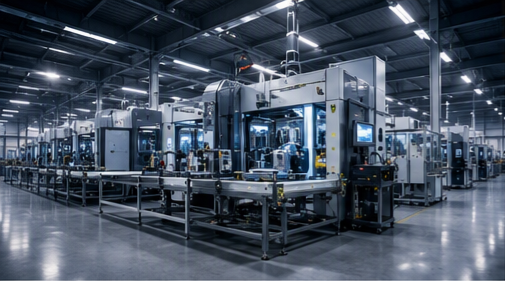

Semiconductor Manufacturing
Cleanroom automation, wafer handling systems, precision equipment integration, and contamination control for front-end and back-end processes.

Cross-Industry Engineering Expertise
INDUSTRIES SERVED
Cleanroom automation, wafer handling systems, precision equipment integration, and contamination control for front-end and back-end processes.
CNC machine design, multi-axis machining centers, grinding systems, and precision spindle engineering for high-accuracy manufacturing.
PLC/SCADA systems, robotics integration, motion control, safety systems, and Industry 4.0 digital transformation for smart factories.
Custom machinery design, hydraulic/pneumatic systems, material handling equipment, and heavy-duty industrial machine development.
SMT line optimization, test equipment design, automated optical inspection, and precision assembly automation for consumer and industrial electronics.
Hygienic design automation, washdown-rated equipment, packaging line integration, and food safety compliance for processing facilities.
High-speed packaging machines, case packing, palletizing systems, and end-of-line automation for diverse packaging formats.
UAV mechanical design, propulsion systems, flight control integration, and regulatory compliance for commercial and industrial drone applications.
Experimental apparatus design, laboratory automation, precision instrumentation, and custom research equipment for scientific investigation.
STEM curriculum development, engineering lab equipment, competition coaching, and hands-on workshop programs for universities and technical schools.
Public infrastructure automation, defense engineering support, standardization consulting, and technology transfer programs for government agencies.
Scalable automation solutions, cost-effective equipment design, digitalization roadmaps, and engineering support tailored for small and medium enterprises.
Our engineering principles apply across sectors. Let's discuss your specific challenges.
Start a Conversation